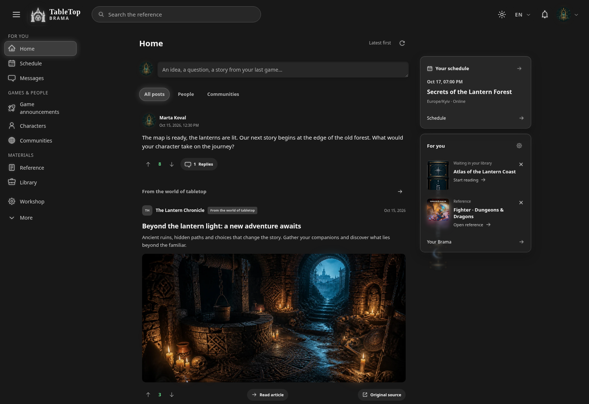
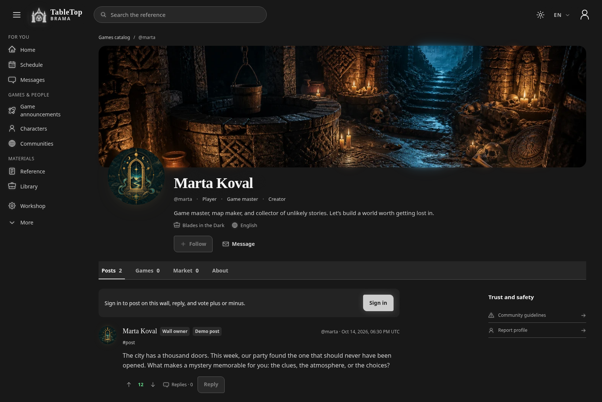
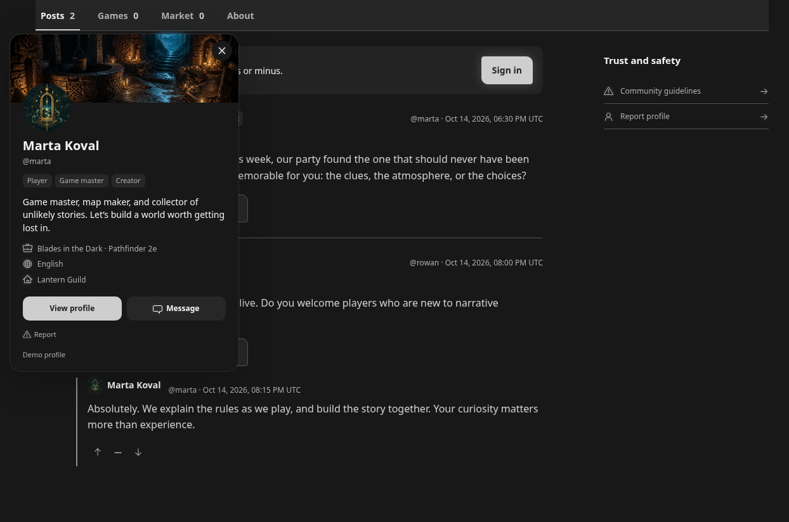
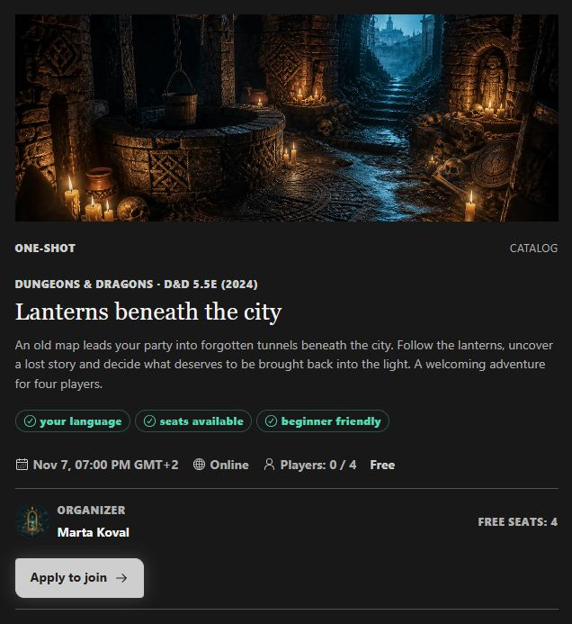
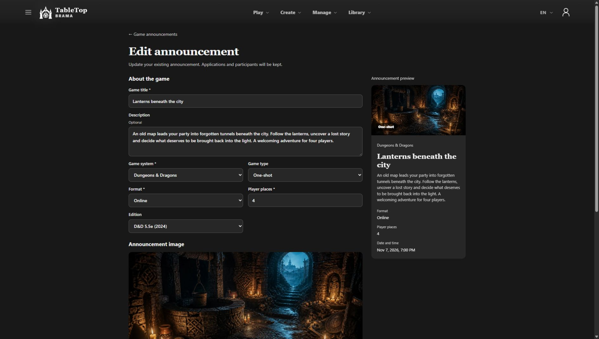
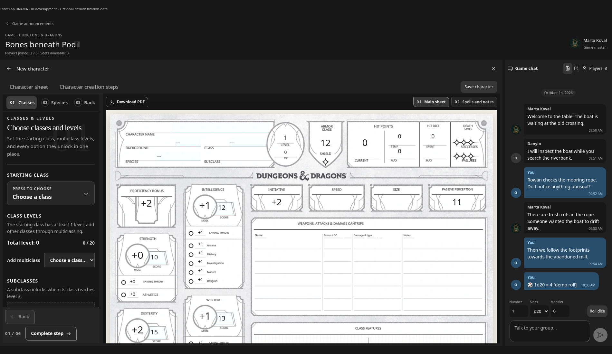
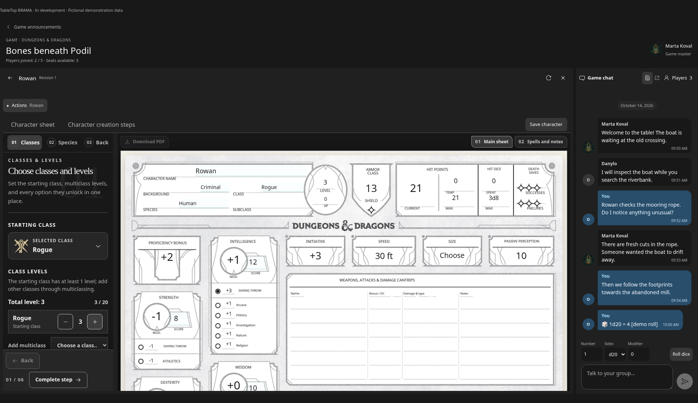
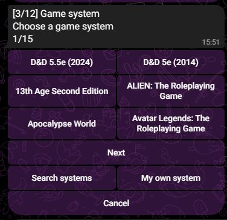
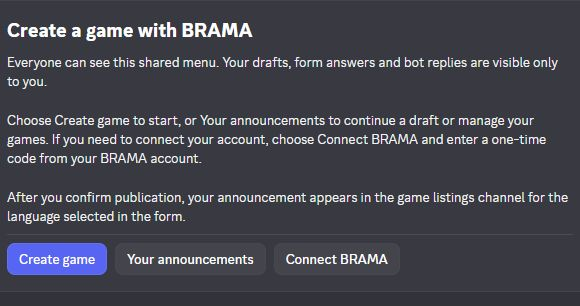

What changed
I’ve updated TableTop BRAMA’s design and profiles. I’m now working on game announcements, the game space, and Telegram/Discord bots for those announcements.
Profile cards are now available: click a name or avatar in comments to see that person’s profile, roles, bio and links without leaving the page. Avatar and cover uploads are also optimised while preserving animation.
What I’m refining now:
- Game announcements: editing without losing applications, clearer system and edition choices, and dates that can be exact, a range, or agreed later. The shared catalogue for announcements has separate D&D 2024 and 2014 entries.
- The game space: creating a character or attaching one from the library, keeping the sheet beside chat, and sending checks from the sheet to the shared chat. I’m refining how these steps fit together.
- Announcement bots: connecting the Telegram and Discord flows with BRAMA, including a private Discord form, a saved choice of interface language, and the corresponding language channels. The bot interface work covers Ukrainian, English, Polish, Czech and Spanish.
BRAMA is still in development and the site is not public yet. Screenshots use fictional demonstration profiles and content.
Screenshots
- Updated BRAMA design
- Demonstration profile
- Profile card in a discussion
- Game announcement
- Announcement editor
- Create a character inside the game
- Character sheet beside the group chat
- Creating an announcement in Telegram
- Announcement tools in Discord
Updated BRAMA design
Updated BRAMA design: the feed, navigation and media in one workspace.

Demonstration profile
An updated profile with a cover, avatar, roles and a personal wall.

Profile card in a discussion
Click a name or avatar to view a profile card without leaving the discussion.

Game announcement
An illustrated announcement with system, edition, time, available seats and a join button. Fictional demonstration game.

Announcement editor
Editing a demonstration announcement with the system, edition, player count and preview visible. This workflow is being refined.

Create a character inside the game
Creating a D&D character with the sheet visible beside the controls and game chat. A development demonstration.

Character sheet beside the group chat
Editing a D&D character inside the game. The sheet and group conversation stay together. Fictional demonstration data.

Creating an announcement in Telegram
The Telegram bot’s system picker: separate D&D 2024 and 2014 entries, search and a custom-system option.

Announcement tools in Discord
The Discord bot’s menu for creating games, continuing drafts and connecting BRAMA. Form answers and bot replies are private to the person using the flow.
